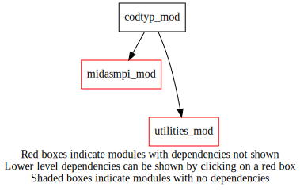
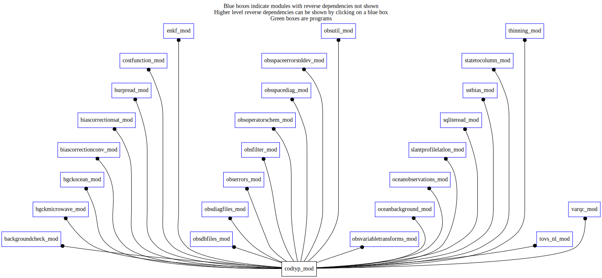

Dependency Diagrams:
 Direct Dependency Diagram¶
 Reverse Dependency Diagram¶
Description
MODULE codtyp_mod (prefix=’codtyp’ category=’8. Low-level utilities and constants’)
- Purpose
To read a list of codtype definitions (codes that define various types of observations) from the namelist and to make them available through functions.
Definitions are taken from: https://wiki.cmc.ec.gc.ca/wiki/Description_exhaustive_du_format_BURP
Quick access
- Variables
- Routines
Needed modules
utilities_mod: MODULE utilities_mod (prefix=’utl’ category=’8. Low-level utilities and constants’)
midasmpi_mod: MODULE midasMpi_mod (prefix=’mmpi’ category=’8. Low-level utilities and constants’)Variables
- codtyp_mod/codtyp_name_length [integer,public/parameter]¶
Subroutines and functions
- subroutine codtyp_mod/codtyp_initialize()¶
- Purpose
To initialize the NAMCODTYP namelist variables
- Called from
- Call to
- function codtyp_mod/codtyp_get_codtyp(name)¶
- Purpose
Given a family name, return the codtyp
NEW information from namelist NAMCODTYP
- Arguments
name [character ,in]
- Return
codtyp_get_codtyp [integer ]
- Called from
ocebg_bgchecksst(),bcc_uaphase(),brpr_updateburp(),cfn_sumjo(),enkf_modifyamsubobserror(),ose_calcompstddevch(),ose_fillompstddevch(),ose_ompstddevexistsforallch(),codtypfam(),odbf_copytoobsspaceheadchar(),odbf_adjustvalues(),diaf_writesqldiagfile(),oer_fillobserrors(),filt_suprep(),osd_getindices(),osd_obspostproc(),oobs_computeobsdata(),slp_calclatlontovs(),sqlr_readsqlite(),sstb_getgriddedobs(),s2c_setupinterpinfo(),thn_thintovs(),thn_thinhyper(),thn_surfaceintime(),tvs_getallidburptovs(),tvs_isidburptovs(),tvs_isidburphyperspectral(),tvs_isidburpinst()- Call to
- function codtyp_mod/codtyp_get_name(codtyp)¶
- Purpose
Given a codtyp, return the family name
NEW information from namelist NAMCODTYP
- Arguments
codtyp [integer ,in]
- Return
codtyp_get_name [character ]
- Called from
mwbg_updateobsspaceafterqc(),mwbg_readobsfromobsspace(),bcc_applyaibcor(),bcs_filterobs(),getobsfilename(),brpr_addcloudparametersandemissivity(),brpr_addelementstoburp(),diaf_getobsfilename(),filt_iceconcentration(),s2c_getfootprintradius(),gettovsfootprintradius(),vqc_listrej()- Call to
{kind=link}
{kind=link}